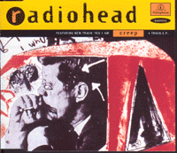
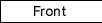
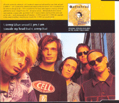
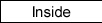

Catalog # : CDR 6078
Reference # : ?
Released 09/21/92
Track Listing :
<1> Creep
<2> Lurgee
<3> Inside My Head
<4> Million Dollar Question
Also available in :
Cassette : TCR 6078
12" : 12R 6078
12" promo : 12RDJ 6078
CD Promo: CDR 6078, reference : 8802342 (Australian)

Catalog # : CDR 6359
Reference # : 8809237EMI
Released 09/06/93
Track listing :
<1> Creep
<2> Yes I Am
<2> Blow Out (remix)
<2> Inside My Head (live)
Inside My Head recorded live at the Metro in Chicago.
Also available in :
Japanese Release : Toshiba EMI TOCP-8129 (released on 01/??/94)
Cassette : TCR 6359
12" : 12RG 6359
7" : RS 6359
12" PROMO : 12RDJ6359
  |
  |
Catalog # : PM 515
Reference # : 7243 8 80919 2 3
Released ??/??/93
Track Listing :
<1> Creep
<2> Yes I Am
<3> Inside My Head (live)
<4> Creep (acoustic)
Catalog # : 12RG6359
Reference # : ?
Released 09/06/93
Track Listing :
<1> Creep (acoustic)
<2> You (live)
<3> Vegetable (live)
<4> Killer Cars (live, acoustic)
Creep recorded at KROQ radio in Los Angeles. All the other tracks recorded live at the Metro in Chocago.
Catalog # : ?
Reference # : TOCP-8129
Released ??/??/93
Track Listing :
<1> Creep
<2> Yes I Am
<3> Inside My Head (live)
<4> Creep (acoustic)
Catalog # : ?
Reference # : 880 679-2
Released ??/??/94
Track Listing :
<1> Creep
<2> The Bends (live)
<3> Prove Yourself (live)
<4> Creep (live)
Songs recorded live at the Black Session on 02/23/93. The bends is misspelled as The Benz.
Catalog # : ?
Reference # : 7243 8 82633 2 0
Released 03/??/96
Track Listing :
<1> Creep
<2> The Bends
Catalog # : ?
Reference # : DPRO-79850
Released ??/??/??
Track Listing :
<1> Creep
<2> Killer Cars (live, acoustic)
PROMO Cassette
Reference # : 4KM 0777 7 44932 4 6
Released ??/??/??
Track listing :
<1> Creep
<2> Faithless, The Wonder Boy
Catalog # : CDRDJ 6078
Reference # : ?
Released 09/21/92
Track Listing :
<1> Creep (radio edit)
<2> Lurgee
<3> Inside My Head
<4> Million Dollar Question
Also available in :
Australian release : Parlophone 8810702
12" PROMO : 12RDJ 6078

Catalog # : ?
Reference # : DPRO 79684
Released ??/??/93
Track Listing :
<1> Creep (radio edit)
<2> Creep
Catalog # : CDRDJ 6359
Reference # : ?
Released 09/06/93
Track listing :
<1> Creep
Also available in :
French Promo : SPCD 1913 (released in '95)
USA promo : DPRO 79850
Catalog # : ?
Reference # : S7-17591
Released ??/??/93
Track Listing :
<1> Creep
<2> Anyone Can Play Guitar
Catalog # : ?
Reference # : DPRO 79257
Released ??/??/95
Track Listing :
<1> Creep (acoustic)